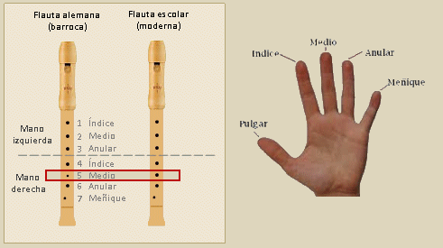

Introducción
El presente curso va dirigido a docentes que deseen incluir la flauta escolar como actividad musical. Se trata de un curso de nivel básico, cuyos contenidos permitirán alcanzar el dominio técnico necesario para afrontar con éxito todo tipo de melodías escolares en las tonalidades de DoM, FaM, SolM y Lam.
Todos los ejercicios y actividades que se plantean en este curso pueden a su vez ser reutilizados con alumnos y alumnas de primer ciclo de E.S.O. (13-14 años) e incluso con alumnos-as de Primaria puesto que partimos desde cero (alumnos-as sin ninguna experiencia con este instrumento) con el fin de evitar cometer errores técnicos de base. Asimismo, permite integrar a alumnos-as que ya se hayan iniciado en el aprendizaje de melodías con flauta escolar, sea cual sea su curso y nivel,
La flauta de pico fue empleada hasta la época barroca (Bach, Haendel, Vivaldi). Posteriormente fue sustituida por la flauta travesera de mejor sonoridad y con mejores posibilidades técnico-interpretativas.
Adagio y Allegro de la Sonata I de G.F. Haendel interpretado por Lenka Molcanyiova
La mayor parte de la gente cree que se trata de un instrumento escolar de fácil manejo y esto es cierto sólo para melodías muy sencillas con un ámbito reducido y en Do mayor. Si el tono cambia o el ámbito melódico supera la 8ª, las dificultades aumentan considerablemente.
Las razones para emplear la flauta dulce o de pico en el ámbito escolar, desde mi punto de vista, son:
Su precio, muy económico.
Su calidad sonora (sonido, afinación) bastante aceptable tanto en madera como en plástico.
Su fácil manejo para melodías sencillas de ámbito reducido en Do mayor.
En este primer módulo comenzaremos con el aprendizaje de los conceptos básicos sobre embocadura, emisión, respiración, etc., que aplicaremos a las notas Sol - La - Si, de fácil emisión y digitación. En los módulos II, III y IV iremos profundizando en otros aspectos técnico-instrumentales necesarios para poder realizar melodías y temas escolares sencillos en DoM, FaM (Sib), SolM (Fa#) y Lam (Sol#).
La mayor parte de los temas escolares están en do mayor, no obstante, en ocasiones aparecen temas en alguno de los tonos vecinos (SolM, FaM, Lam) por lo que es necesario el aprendizaje de algunas notas alteradas: Fa#, Sib y Sol#. La realización melódica más allá de estas tonalidades vecinas resulta prácticamente imposible en el ámbito escolar. La aparición de notas alteradas complica bastante la realización melódica. El mayor o menor grado de complejidad y/o dificultad en la flauta escolar viene dado por (de menor a mayor):
- La tonalidad: DoM, Lam, FaM, SolM
- El ámbito melódico: Inferior a la 8ª (5ª, 6ª, 7ª) // Superior a la 8ª (9ª, 10ª,...)
- El contorno melódico: Grados conjuntos (predominio de 2as) // Grados disjuntos o saltos (4as, 5as, ...)
- Las figuraciones rítmicas: Sencillas (blanca, negras, corcheas) // Complejas (semicorcheas, figuras con puntillo, ligaduras de prolongación, ...)
- El tempo: Moderado / Rápido / Lento
- El compás: Simple (2/4, 3/4 y 4/4) // Compuesto (6/8, 9/8, 12/8)
La flauta que emplearemos es la denominada "flauta moderna" (escolar), la cual no hay que confundir con la "flauta alemana" (barroca), dado que ambas parecen similares pero no lo son. La flauta alemana presenta una mayor dificultad técnica dado que las posiciones de algunas notas son distintas y bastante más complicadas, motivo por el que no la recomiendo.
Veamos cómo distinguirlas:

Diferencias entre la flauta alemana y la moderna
En cuanto a su tesitura, la flauta escolar (soprano) es un instrumento transpositor a la 8ª, es decir, que sus sonidos reales suenan una 8ª más agudos de como aparecen escritos en partitura. No obstante, siempre que se haga referencia a la altura de una determinada nota se emplearán los subíndices sonoros en relación a su posición en el pentagrama y no a su sonido real. Por ejemplo, si se menciona Do3 se hace referencia a la nota inicial de la flauta escolar (soprano) y no a su sonido real (Do4).
En el Módulo IV aparece una serie de temas muy conocidos que han sido seleccionados de diferentes fuentes (folclore, temas de cine, etc.) y que nos dan una idea bastante aproximada de las dificultades técnicas que deberemos superar.
Indicar por último, que la mayoría de los ejercicios se podrán realizar con su acompañamiento rítmico-armónico en formato Mp3, de manera que el alumno-a aprenderá técnica básica como si estuviera en un grupo de cámara. Estos acompañamientos han sido arreglados, armonizados, instrumentados y editados expresamente con este fin. Solo hay que clicar sobre el audio y realizar el ejercicio o actividad que corresponda. Los ejercicios así realizados son mucho más amenos, divertidos y motivadores. Como actividad final del curso (Lección 15) se incluyen una serie de temas muy conocidos que han sido seleccionados de diferentes fuentes (folclore, temas de cine, etc.). |IMPORTANTE**1. Los ejercicios y actividades de ampliación son opcionales.2. Al final de esta página se dan algunas orientaciones sobre como afrontar el estudio instrumental.3. Los ejercicios y actividades de este curso pueden también ser empleados con nuestros alumnos-as con el mismo objetivo fundamental: adquirir la técnica necesaria para interpretar melodías sencillas.**
2. Al final de esta página se dan algunas orientaciones sobre como afrontar el estudio instrumental.
Algunas consideraciones sobre el estudio instrumental
LA PRÁCTICA INSTRUMENTAL
Cuando alguien decide comenzar el estudio de un instrumento musical debe tener en cuenta una serie de consideraciones:
La práctica totalidad de los métodos de aprendizaje se basan en el lenguaje musical tradicional (partituras). Por lo tanto, es imprescindible conocer todo lo relacionado con la lectura de partituras y teoría de la música, al menos a nivel elemental (notas, figuras, silencios, alteraciones, compases, repeticiones, armaduras, ligaduras, articulaciones, etc.).
Es necesario aprender a utilizar determinados procedimientos para ir superando las dificultades técnicas que vayamos encontrando. Son los siguientes:
Trabajo previo de lectura (partitura):
- A nivel rítmico (figuras y silencios)
- A nivel melódico (notas)
- Otros: armadura, repeticiones, dinámicas (matices), etc. </ul>
- Localizar los puntos de mayor dificultad y aislarlos para fragmentar el estudio (motivos, semifrases, frases,...). De esta manera trabajaremos mejor la actividad o ejercicio propuesto. De nada sirve realizar un ejercicio equivocándonos y deteniéndonos en los mismos puntos una y otra vez, justo donde encontramos mayor dificultad. Si no nos detenemos en dichas dificultades, aislándolas y estudiándolas por separado no avanzaremos. Para ellos hay que:
- Fragmentar (aislar) los puntos de mayor dificultad y estudiarlos por separado. Bajar el "tempo" cuando aparezcan las dificultades y repetir hasta alcanzar la velocidad deseada.
- Trabajar la actividad o ejercicio por fragmentos pequeños (motivos de 2 compases o semifrases de 4).
- Ir uniendo fragmentos cada vez mayores hasta lograr realizar la actividad o ejercicio completo.
- Se dice que un ejercicio, tema o pieza está completamente superada cuando somos capaces de interpretarla de memoria. </ul>